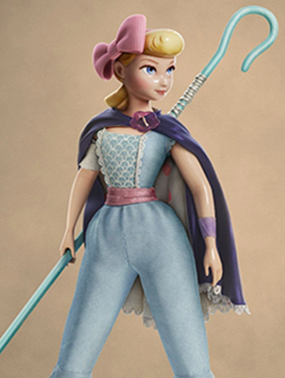
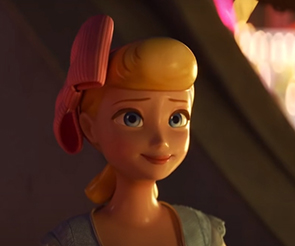

RELEVAMIENTO PERSONAJE
Personalidad
Gentil, tierna, elegante y de buen corazón. Ella tiene sentimienos hacia Woody y lo cuida. En la última película se la ve de carácter fuerte, con una actitud diferente donde se muestra segura y aventurera.

Aspecto
Pese a no tener la vestimenta al igual que una muñeca de porcelana (que suele ser de vestido). Ella puede verse elegante y refinada, con su look aventurero.
Rubia, ojos celestes y poco maquillaje, asi puede verse esta pastorcita.
Inspirada en aquellas muñecas de porcelana, francesas y alemanas de entre los años 1860 y 1900, pensadas para el juego infantil.

Película
Bo Peep, pertenece a la película Toy Story. Su personaje está presente en todas las sagas menos en la tercera. En las primeras dos esta muñeca de porcelana todavía era un simple adorno en la lámpara favorita de Molly y que a menudo necesitaba de la ayuda de Woody.
Pero esta Bo Peep poco o nada tiene que ver con la que podemos ver en Toy Story 4, que comienza cuando, años atrás, esa lámpara es regalada a otra familia, separando a Woody de su amada pastora.
Años después, en la actualidad la muñeca se ha convertido en un muñeco perdido que se las ha arreglado sorprendentemente bien ella sola, viajando por el mundo tras escaparse de una tienda de antigüedades donde había terminado su lámpara. Al final esta pastorcita convence a Woody de que no vuelva a casa de Bonnie y explore mundo con ella.
Pero esta Bo Peep poco o nada tiene que ver con la que podemos ver en Toy Story 4, que comienza cuando, años atrás, esa lámpara es regalada a otra familia, separando a Woody de su amada pastora.
Años después, en la actualidad la muñeca se ha convertido en un muñeco perdido que se las ha arreglado sorprendentemente bien ella sola, viajando por el mundo tras escaparse de una tienda de antigüedades donde había terminado su lámpara. Al final esta pastorcita convence a Woody de que no vuelva a casa de Bonnie y explore mundo con ella.
{kind=link}
{kind=link}
{kind=link}
{kind=link}